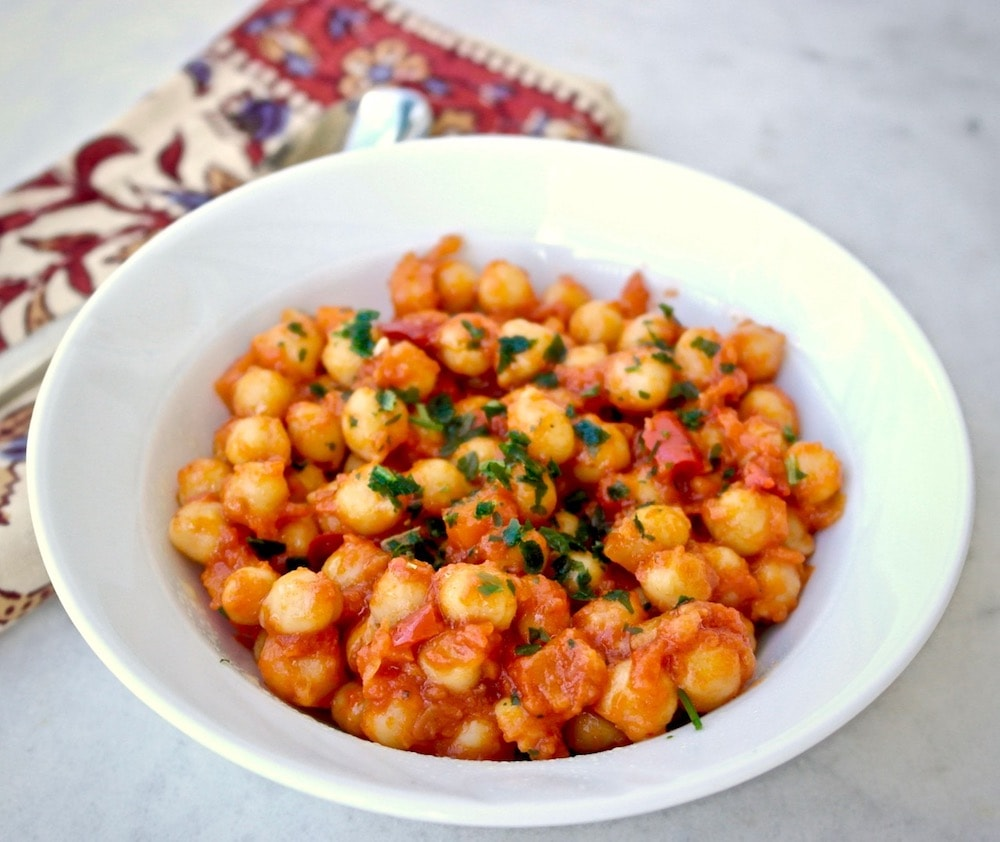

Chickpeas Recipe

This a recipe Abhiyan acquainted me. Solid quick and tasty.
Have it roti or rice or whatever you want.
8/10.
Ingredients
- Chickpeas
- Onion
- Ginger Garlic
- Salt
- Turmeric
- Coriander/Parsley
- Thick Cream
Steps
- Heat oil
- Add Jira
- Add Onion
- Ginger garlic
- Fry a while and add diced tomato
- Add Salt, turmeric... cumin , coriander
- Add chilli flakes and powder
- Add chickpeas water and close lid
- Add thick cream
- Top it up with coriander or parsley